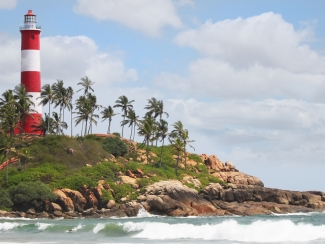

TOP DESTINATIONS
-
Kadalundi Bird Sanctuary
The Kadalundi Bird Sanctuary lies at Balathiruthi Islands in Vallikkunnu Grama Panchayat of Malappuram district in Kerala, India. It spreads over a cluster of islands where the Kadalundipuzha River flows into the Arabian Sea. The Sanctuary hill is around 200 m above sea level. It is 10 km from Parappanangadi, 29 km from Tirur, 39 km from Malappuram and 19 km from Kozhikode city centre. The nearest airport is Karipur Airport, Kondotty
-

Kallayi
The village of Kallayi is situated on the banks of the river Kallayi. It has an archaic charm and was a busy timber trade centre during the late nineteenth and early twentieth centuries. Today, only a few mills exist in the area but the view from the Kallayi Bridge built by the British is a perfect spot to witness a breathtaking sunset.
-
Parappalli Beach
Parappalli Beach is a surf spot. Parappalli is situated on the rock hills of Kollam beach, near Koyilandy, in the district. There is a mosque near by parappalli beach. Parappalli mosque is one of the most prominent mosques of Sunnis with a history of over 500 years, has become a pilgrim centre for the believers of all communities from around the country and abroad.
-

Kadalur Point Lighthouse (Nandi lighthouse)
The Kadalur Point Lighthouse also known as nandi lighthouse is situated in Kadalur, near Koyilandy in Kozhikode district on the coast of Arabian sea in India.The circular stone masonry tower has a height of 34 meters. The tower is painted with black and white bands. The lighthouse started its operation in 1907. The light source is a metal halide lamp.
-
Pazhassi Raja Archaeological Museum
Pazhassi Raja Archaeological Museum is a museum and art gallery in Kozhikode, Kerala. The museum has a rich collection of historical artifacts from 1000 BC to 200 AD.